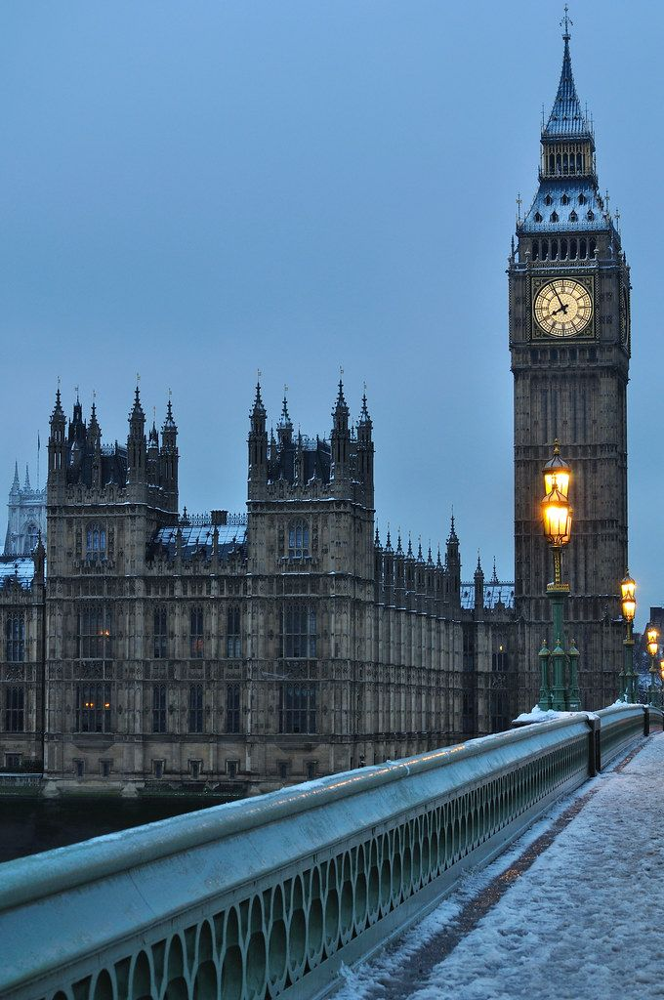

United Kingdom in Fall
Enjoy the crisp autumn air and beautiful fall colors in the United Kingdom!

London
Explore the capital with its iconic landmarks and rich history.
- Activities: Visit the Tower of London, Buckingham Palace, and the British Museum.
- Highlights: Historic landmarks, vibrant parks, and unique culture.

Edinburgh
Discover the ancient capital with its castles, festivals, and scenic beauty.
- Activities: Explore Edinburgh Castle, hike Arthur’s Seat, and visit the Royal Mile.
- Highlights: Stunning views, historic architecture, and Scottish culture.

Bath
Relax in the historical town known for its Roman baths and Georgian architecture.
- Activities: Visit the Roman Baths, Bath Abbey, and the Royal Crescent.
- Highlights: Natural hot springs, stunning architecture, and a relaxing atmosphere.

Lake District
Explore the scenic beauty of England’s largest national park with its lakes and mountains.
- Activities: Hiking, boating, and exploring the charming villages.
- Highlights: Breathtaking landscapes, picturesque lakes, and vibrant fall colors.